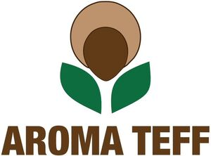

Trade Mark Journal No.2025/028 11 July 2025
WO0000001850651 (29,30,31)
Office of origin: Switzerland
Date of International Registration:2 January 2025
Date of designation in the UK:
2 January 2025

The mark contains the colours dark brown, light brown and green
International priority date claimed: 4 July 2024
(Switzerland)
(818755)
- Class 29
- Preserved, frozen, dried and cooked fruit and vegetables; jellies, jams, compotes; eggs; milk, cheese, butter, yogurt and other dairy products; oils and fats for food; prepared seeds; teff milk; chips.
- Class 30
- Cereals; flour and preparations made from cereals; bread, pastry and confectionery products; yeast, baking powder; dried cereal flakes; dry cereals; gluten-free bread; pasta; macaroni; noodles; spaghetti; savory pancakes; baking dough; savory pancake mix; cake dough; pastry dough; cereal bars; protein-based cereal bars; muesli; rusks; cookies (biscuits); crackers; rice biscuits; malt biscuits; filled biscuits; cereal-based snacks; dumplings made with flour; pancakes [foodstuffs]; teff flour; teff-based pancakes; sorghum flour; cereal-based pancakes; pulse flours; processed grains; ground pepper; aromatic preparations for food; roasted seeds; dried seeds; pancakes; couscous; semolina; chickpea flour.
- Class 31
- Unprocessed and non-transformed agricultural, aquacultural, horticultural and forestry products; unprocessed and raw grains and seeds; teff seeds; sorghum seeds; natural plants and flowers; bulbs, seedlings and seeds; grains [cereals]; bran; roots for food; unprocessed cereal grains; red millet.
Aroma Impex Sàrl
Representative: Inteltech SA, Rue Saint-Honoré 1,, Case postale 2510, CH-2001 Neûchatel, SWITZERLAND